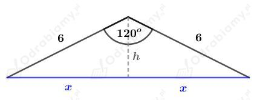
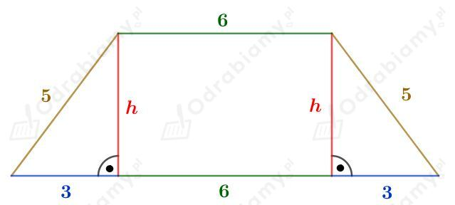
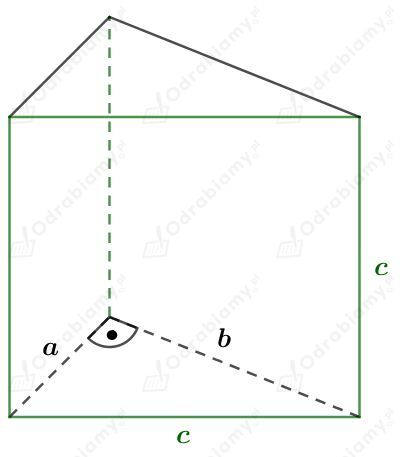
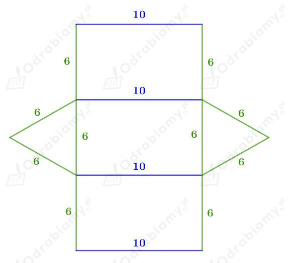
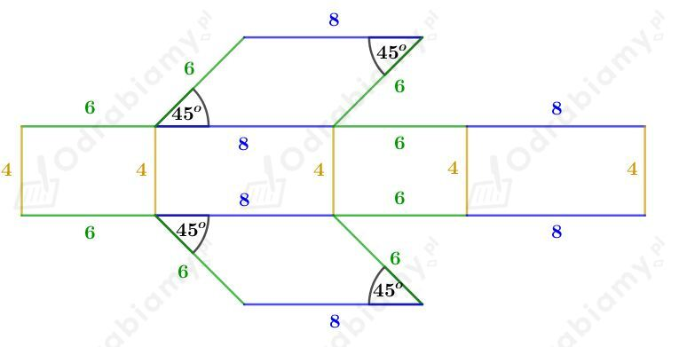
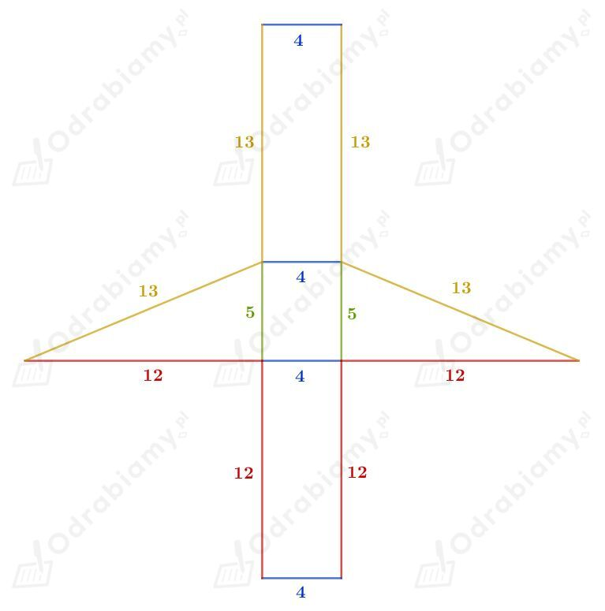
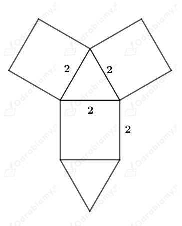
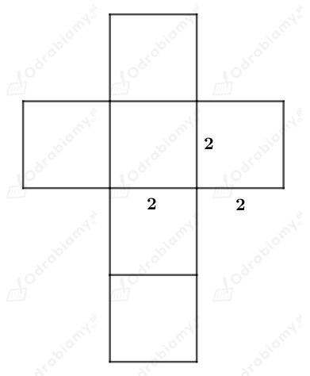
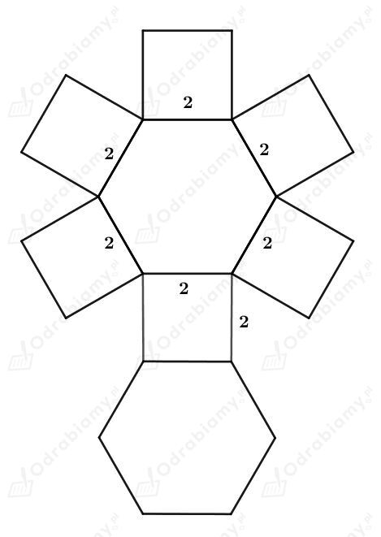
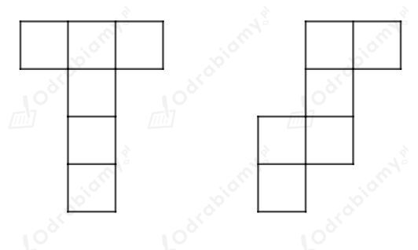

Dany jest graniastosłup prosty o wysokości długości 8 cm.
a)
Podstawą tego graniastosłupa jest romb o kącie ostrym 30° i boku długości 12 cm.
Wyznaczmy pole podstawy tego graniastosłupa, korzystając z odpowiedniego wzoru na pole rombu. Mamy:
Wysokość graniastosłupa ma długość 8 cm. Powierzchnia boczna zbudowana jest z czterech przystających prostokątów o wymiarach 8 cm x 12 cm.
Wyznaczmy pole powierzchni bocznej. Mamy:
Wyznaczmy pole powierzchni całkowitej. Mamy:
b)
Podstawą tego graniastosłupa jest przedstawiony na rysunku trójkąt:

Korzystając ze związku między długościami boków w trójkącie o kątach 30o, 60o, 90o mamy:
oraz
Wyznaczmy pole powierzchni podstawy tego graniastosłupa. Mamy:
Wyznaczmy pole powierzchni bocznej tego graniastosłupa. Mamy:
Wyznaczmy pole powierzchni całkowitej. Mamy:
Dany jest graniastosłup prosty, którego podstawą jest trapez równoramienny o bokach długości 12 cm, 5 cm, 6 cm i 5 cm.
a)
Niech H będzie długością wysokości tego graniastosłupa.
Wiemy, że pole powierzchni bocznej tego graniastosłupa wynosi 560 cm2, zatem otrzymujemy równanie:
Odp. Wysokość tego graniastosłupa ma długość 20 cm.
b)
Narysujmy podstawę tego graniastosłupa:

Korzystając z twierdzenia Pitagorasa mamy:
Wyznaczmy pole powierzchni podstawy tego graniastosłupa, korzystając ze wzoru na pole trapezu. Mamy:
Z treści zadania wiemy, że pole powierzchni całkowitej tego graniastosłupa wynosi 492 cm2. Wyznaczmy pole powierzchni bocznej tego graniastosłupa. Mamy:
Niech H będzie długością wysokości tego graniastosłupa. Otrzymujemy zatem równanie:
Odp. Wysokość tego graniastosłupa ma długość 15 cm.
Rysunek:

Z treści zadania wiemy, że:
Ściana o największym polu równym 100 cm2 to kwadrat o bokach długości c. Zatem:
Zatem mamy:
Korzystając z twierdzenia Pitagorasa mamy:
Zatem przyprostokątne tego trójkąta prostokątnego mają długości 6 cm i 8 cm.
Wyznaczmy pole powierzchni podstawy tego graniastosłupa. Mamy:
Wyznaczmy pole powierzchni bocznej tego graniastosłupa. Mamy:
Wyznaczmy pole powierzchni całkowitej tego graniastosłupa. Mamy:
a)
Podstawą graniastosłupa jest trójkąt równoboczny o boku długości 6. Wysokość graniastosłupa ma długość 10.
Naszkicujmy siatkę tego graniastosłupa:

Obliczmy pole powierzchni podstawy, korzystając ze wzoru na pole trójkąta równobocznego. Mamy:
Na pole powierzchni bocznej składają się pola trzech jednakowych prostokątów o wymiarach 6 x 10. Wyznaczmy pole powierzchni bocznej. Mamy:
Wyznaczmy pole powierzchni całkowitej tego graniastosłupa. Mamy:
b)
Podstawą graniastosłupa jest równoległobok o bokach długości 8 i 6. Wysokość graniastosłupa ma długość 4.
Naszkicujmy siatkę tego graniastosłupa:

Wyznaczmy pole powierzchni podstawy, korzystając z odpowiednio wzoru na pole równoległoboku. Mamy:
Wyznaczmy pole powierzchni bocznej. Mamy:
Wyznaczmy pole powierzchni całkowitej tego graniastosłupa. Mamy:
c)
Podstawą graniastosłupa jest trójkąt prostokątny o przyprostokątnych długości 12 i 5. Niech x będzie długością przeciwprostokątnej tego trójkąta.
Korzystając z twierdzenia Pitagorasa mamy:
Wysokość graniastosłupa ma długość 4.
Naszkicujmy siatkę tego graniastosłupa:

Wyznaczmy pole powierzchni podstawy tego graniastosłupa. Mamy:
Wyznaczmy pole powierzchni bocznej. Mamy:
Wyznaczmy pole powierzchni całkowitej tego graniastosłupa. Mamy:
a)
Naszkicujmy siatkę graniastosłupa prawidłowego trójkątnego, którego wszystkie krawędzie mają długość 2 cm.

Obliczmy pole powierzchni podstawy, korzystając ze wzoru na pole trójkąta równobocznego. Mamy:
Wyznaczmy pole powierzchni bocznej. Mamy:
Wyznaczmy pole powierzchni całkowitej tego graniastosłupa. Mamy:
b)
Naszkicujmy siatkę graniastosłupa prawidłowego czworokątnego, którego wszystkie krawędzie mają długość 2 cm.

Podany graniastosłup to sześcian. Wyznaczmy pole powierzchni całkowitej tego sześcianu. Mamy:
c)
Naszkicujmy siatkę graniastosłupa prawidłowego sześciokątnego, którego wszystkie krawędzie mają długość 2 cm.

Sześciokąt foremny zbudowany jest z sześciu przystających trójkątów równobocznych.
Obliczmy pole powierzchni podstawy, korzystając ze wzoru na pole trójkąta równobocznego. Mamy:
Wyznaczmy pole powierzchni bocznej. Mamy:
Wyznaczmy pole powierzchni całkowitej tego graniastosłupa. Mamy:
Naszkicujmy brakujące dwie siatki sześcianu:
